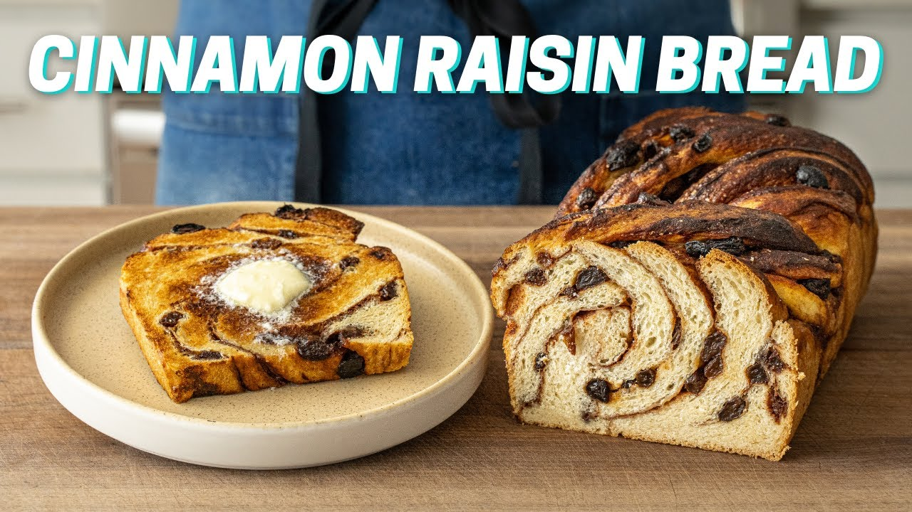

Brian Lagerstrom's Cinnamon Raisin Bread

Description
Cinnamon Raisin Bread is a classic breakfast item that I think anyone can agree is delicious. But we're sophisticated humans who want to make our food taste better than the bagged stuff you get at the grocery store. For this one, I'm showing you the best way I know how to make cinnamon raisin bread and how you can really up the ante on this breakfast (or brunch or dessert or anytime) fav. - Brian
Ingredients
Bread:
- 220 g warm water
- 90 g buttermilk, room temp
- 5 g instant yeast
- 65 g sugar
- 525 g ap flour
- 14g salt
- 130 g butter, melted
- eggwash (1 egg + couple tsp water)
Cinnamon Sugar Blend:
- 10 g groudn cinnamon
- 100 g brown sugar
- 2 g salt
- 150 g raisins
Steps
- Into a medium mixing bowl, measure water, buttermilk, yeast, sugar, flour, salt, and melted butter. Stir to combine with a spoon. Once combined well, use a very wet hand to squeeze and mix until fully combined. Cover and let sit for 30 minutes.
- Conduct 4-5 strength building folds followed by 10-12 slap and folds as shown @1:45. Cover again and let sit at room temp for another 30 minutes. Conduct another set of stretch & folds + slap & folds. Cover and allow to ferment at room temp for 90 minutes.
- Turn out dough onto a lightly floured work surface and flour top of dough and rolling pin. Roll out into approximately 24"x12-16" sheet that's about 1/2" thick. Brush top of dough with egg wash. Sprinkle with cinnamon sugar mixture followed by raisins in an even layer. Roll tightly (starting at a short edge) then cut in half lengthwise. Twist one half over the other, keeping the cut sides facing up (see @6:26).
- In the meantime, butter all sides of an 8.5x4.5 (or 1 pound) loaf pan. Place into well buttered bread pan. cover with a towel and let rise at room temp for 1 hour. Brush top with egg wash. Bake in a preheated 400F/204C oven for 30min. Tent with foil, lower oven temp to 350F/176C, and finish baking for 15-20min. Once cooled, cut into slices, toast, add a little butter and enjoy.